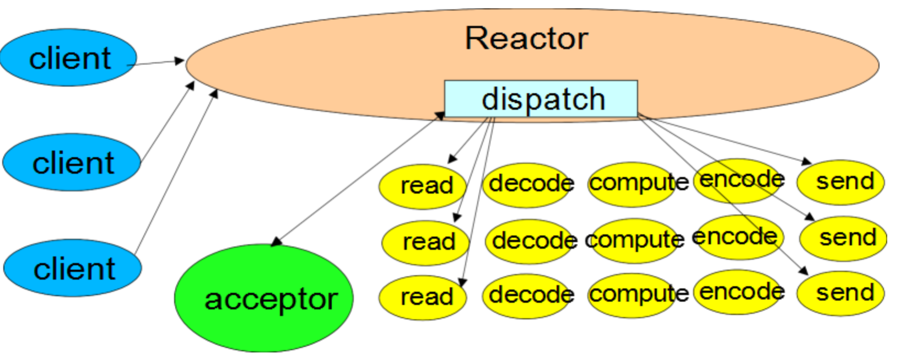
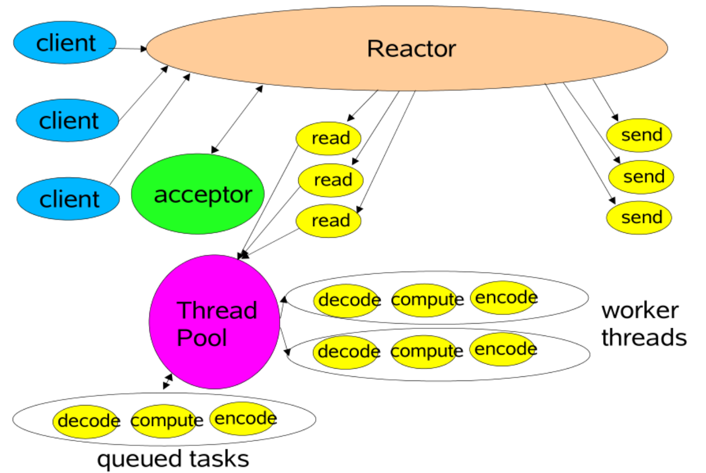
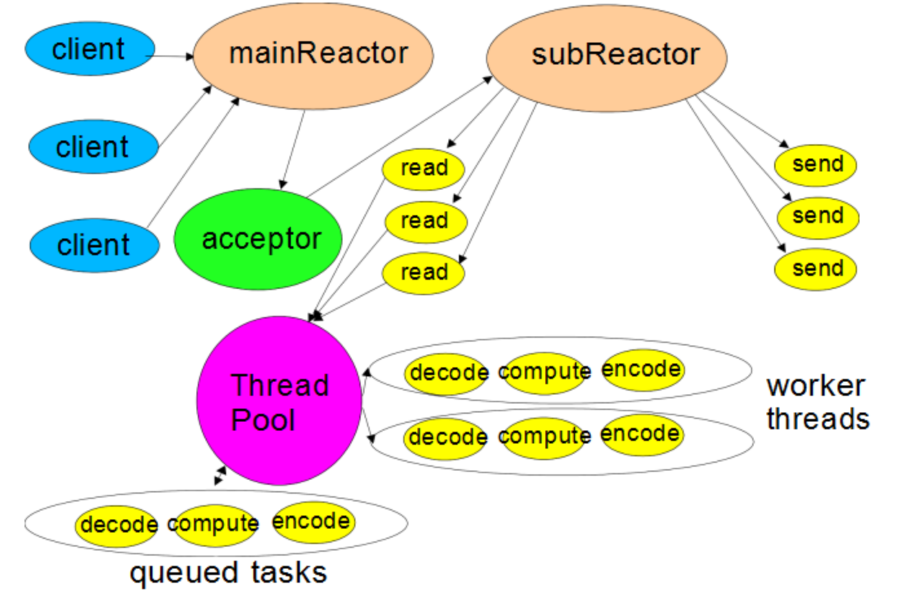
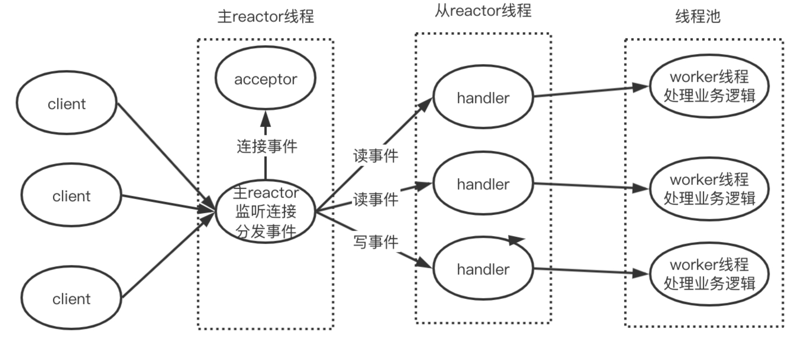
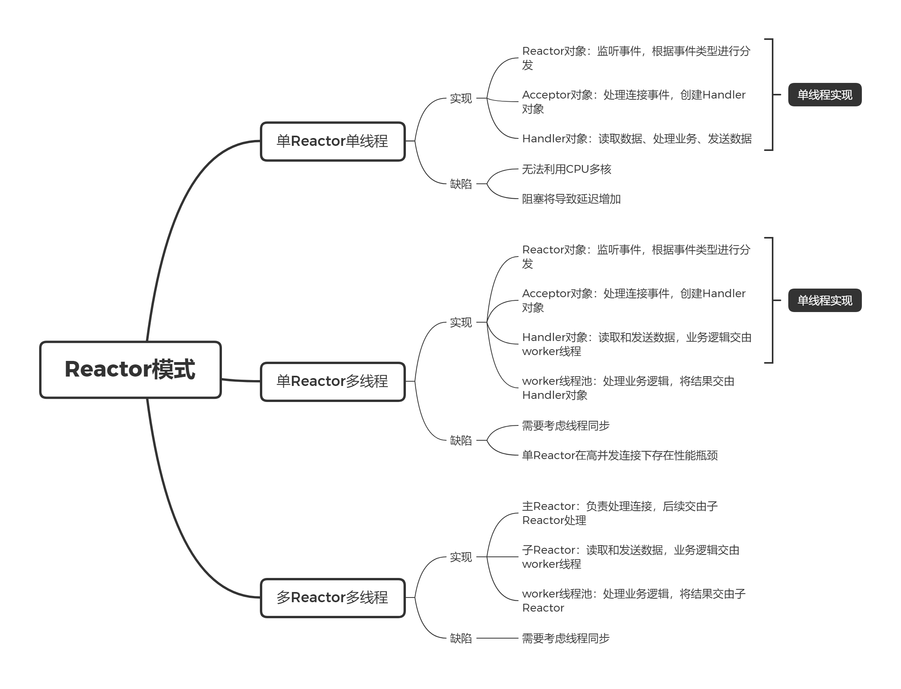

Reactor模式
1. 介绍
在 IO多路复用 文章中提到，引入了 IO 多路复用解决了 C10K 问题，但直接基于 select/poll/epoll 编写服务端程序还是比较复杂的，于是对此做了一层封装，称为 Reactor 模式。
Reactor 模式也称为 Dispatcher 模式，使用 IO 多路复用监听事件，收到事件后，根据事件类型分配给某个线程。
下文将介绍常见 Reactor 模型的实现方案。
2. 单Reactor单线程
单 Reactor 单线程是最简单的实现方案，示意图如下：

这里主要有三个对象 Reactor、Acceptor 和 Handler：
- Reactor 对象通过 IO 多路复用监听事件，如果是连接事件则分发给 Acceptor 对象，非连接事件则分发给 Handler 对象；
- Acceptor 对象会获取连接，并为此连接创建一个 Handler 对象处理后续的业务；
- Handler 对象进行 读数据 -> 处理业务 -> 发送数据 的流程。
上面的三个对象都在同一个线程中，实现简单，不过也存在两个缺点：
- 无法利用多核 CPU 的性能优势；
- Handler 处理业务时， 无法处理其他事件，如果业务耗时较长或者阻塞，将会增加响应延迟。
单 Reactor 单线程的实现方案适用在计算密集、业务处理时间短的场景，例如 Redis。
早期版本的 Redis 使用了单 Reactor 单线程的方案，但由于单 Reactor 在处理大量网络 IO 上的不足，在 6.0 版本后改为了 多 Reactor 单线程的方案。
3. 单Reactor多线程
要解决 单 Reactor 单线程 方案的缺点，一个直观的想法是引入多线程，单 Reactor 多线程的实现方案如下所示：

这个方案的 Reactor 对象和 Acceptor 对象与 单 Reactor 单线程 方案是一样的，不同的是：
- Handler 不再处理业务，而是负责数据的接收和发送，业务处理交由线程池中的 worker 线程实现；
- worker 线程处理完业务后，将结果发送给主线程的 Handler 对象，由 Handler 将结果发送给客户端。
引入多线程，充分利用了 CPU 多核处理的性能资源，但 worker 线程完成业务处理之后，需要将结果传递过主线程，这里需要考虑线程同步。
另一方面，只有一个 Reactor 对象承担所有事件的监听和响应，正在高并发场景中容易成为性能瓶颈。
4. 多Reactor多线程
为了解决单 Reactor 在高并发连接的性能瓶颈，需要改为多 Reactor，方案示意图如下：

这个方案中，会包含一个主 Reactor、多个子 Reactor 线程和 worker 线程池：
- 主 Reactor：负责监听客户端连接事件，并在同一个线程中让 Acceptor 处理连接事件，连接建立后，分发给子 Reactor 线程；
- 子 Reactor：监听客户端连接的后续事件，当发生读写事件时，让同一个线程中的 Handler 读取和发送数据，具体业务处理交由 worker 线程实现。
- worker 线程池：实现业务处理。

5. 总结
